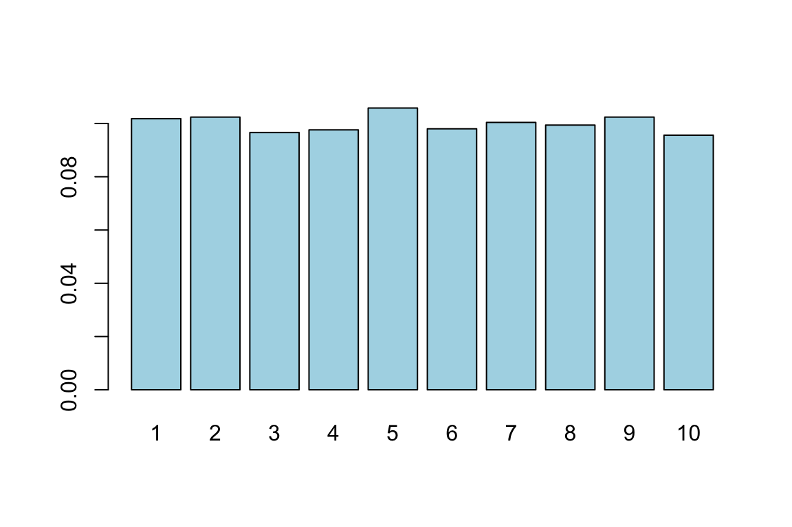
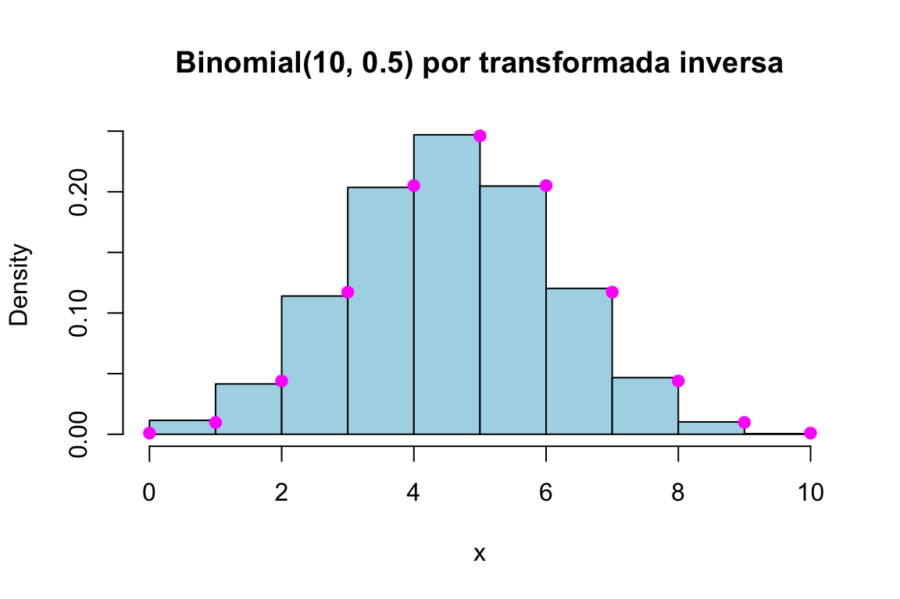
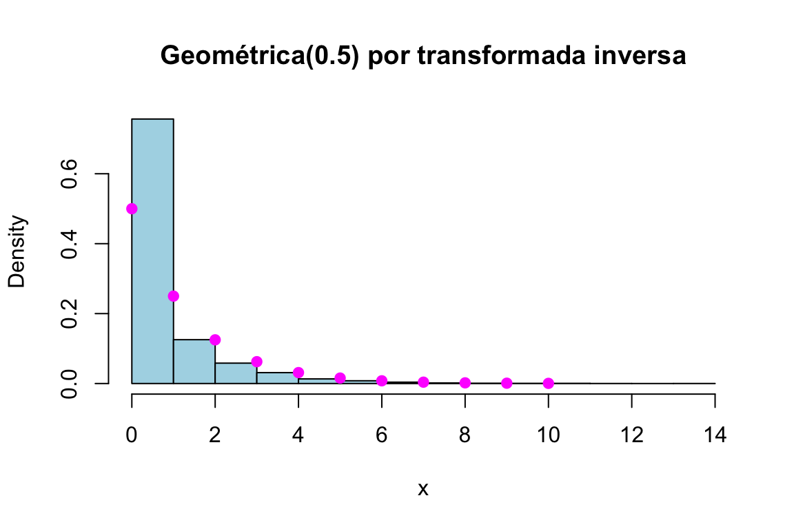
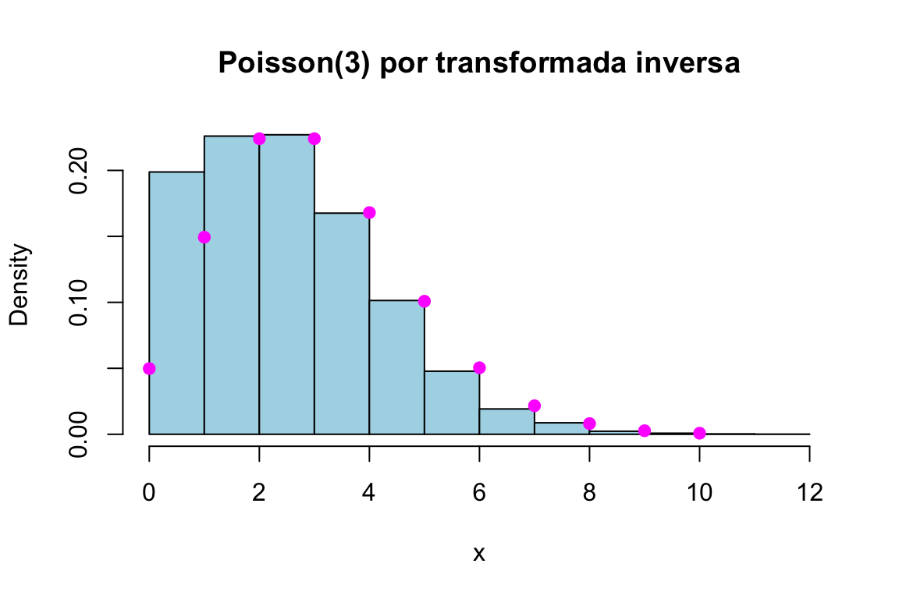
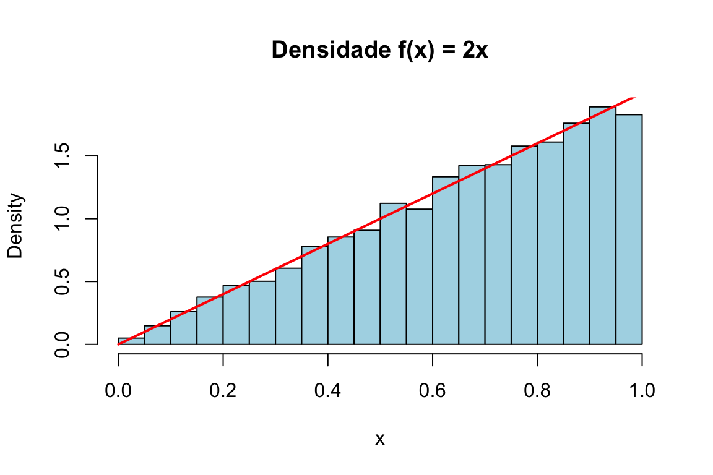
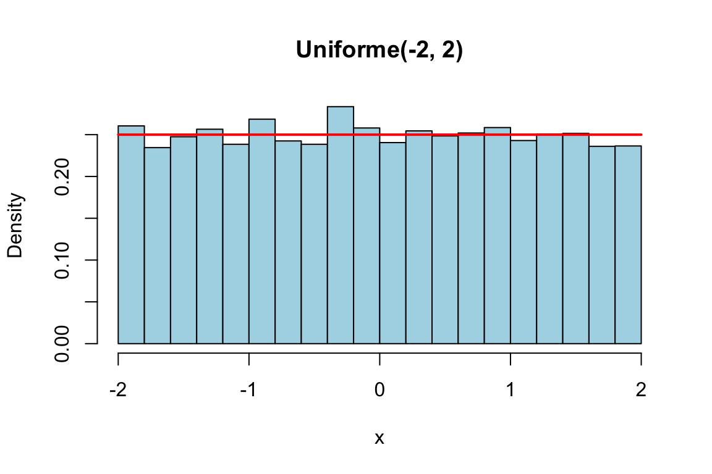
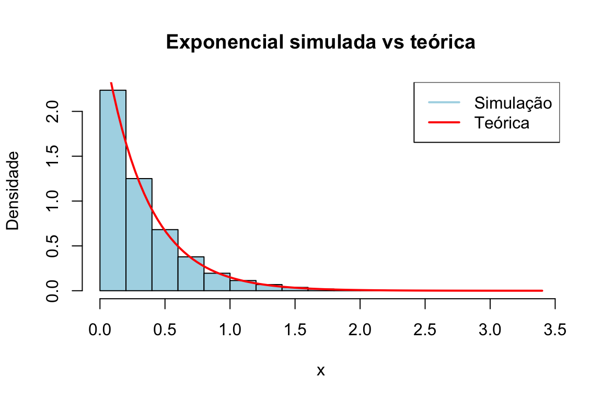

Capítulo 22 Método da transformada inversa
Nos capítulos anteriores gerámos variáveis aleatórias com as funções rnome do R —
rbinom, rpois, rnorm, e as demais. Mas de onde vêm esses números? E o que fazer
quando precisamos de uma distribuição para a qual o R não oferece uma função pronta?
A resposta a ambas as perguntas começa com uma observação notável: se soubermos gerar
números uniformes em \((0, 1)\) — a matéria-prima de todo o acaso no computador —, podemos
transformá-los em amostras de qualquer distribuição. O método da transformada
inversa é a primeira e mais fundamental dessas transformações.
Vale a pena dominá-lo por três razões: permite gerar amostras de distribuições não
implementadas no R; dá flexibilidade para simulações personalizadas; e, sobretudo,
esclarece os fundamentos da geração de variáveis aleatórias — implementá-lo à mão é
compreender o que as funções rnome fazem por dentro.
Neste capítulo aprendemos o resultado que está na base da geração de variáveis aleatórias — a transformada integral de probabilidade — e aplicamo-lo para gerar, a partir de números uniformes, variáveis discretas (arbitrárias, Bernoulli, binomial, geométrica, Poisson) e contínuas (exponencial, uniforme, Weibull, Cauchy, e outras).
22.1 O resultado fundamental
Tudo assenta no seguinte teorema, conhecido como transformada integral de probabilidade.
Teorema. Seja \(F\) uma função de distribuição qualquer e defina-se a sua inversa generalizada por \[F^{-1}(u) = \inf\{x : F(x) \geq u\}, \qquad 0 < u < 1.\] Se \(U \sim U(0, 1)\), então a variável aleatória \(X = F^{-1}(U)\) tem função de distribuição \(F\). Reciprocamente, se \(X\) é contínua com função de distribuição \(F\), então \(F(X) \sim U(0, 1)\).
A demonstração é curta no caso em que \(F\) é contínua e estritamente crescente (e, por isso, invertível no sentido usual). A chave é a equivalência \(F^{-1}(u) \leq x \iff u \leq F(x)\). Então \[P(X \leq x) = P\big(F^{-1}(U) \leq x\big) = P\big(U \leq F(x)\big) = F(x),\] onde a última igualdade decorre de \(U \sim U(0, 1)\) e \(0 \leq F(x) \leq 1\) (para uma uniforme, \(P(U \leq a) = a\)). Logo \(X = F^{-1}(U)\) tem mesmo a distribuição \(F\).
A intuição é geométrica: a função de distribuição \(F\) transforma o eixo dos \(x\) na escala de probabilidades \([0, 1]\); inverter esse mapa é sortear uma “altura” \(U\) uniforme em \([0, 1]\) e ler qual o \(x\) que lhe corresponde. Regiões onde \(F\) sobe depressa (isto é, onde a densidade é alta) recebem, naturalmente, mais valores.
Deste teorema resulta uma receita geral:
Receita da transformada inversa.
- Determine a função de distribuição \(F(x) = P(X \leq x)\).
- Resolva a equação \(u = F(x)\) em ordem a \(x\), obtendo a inversa \(x = F^{-1}(u)\).
- Gere \(U \sim U(0, 1)\) e devolva \(X = F^{-1}(U)\).
Vejamos como isto se concretiza, primeiro para variáveis discretas e depois para contínuas.
22.2 Variáveis aleatórias discretas
O método da transformada inversa também se aplica a variáveis aleatórias discretas. A diferença principal é que, neste caso, a função de distribuição não é contínua: ela é uma função em escada, com saltos nos pontos que pertencem ao suporte da variável aleatória.
Suponhamos que \(X\) toma valores
\[ x_1 < x_2 < x_3 < \cdots \]
com probabilidades
\[ P(X=x_i)=p_i, \qquad i=1,2,\ldots, \]
onde \(p_i\geq 0\) e \(\sum_i p_i=1\). A função de distribuição acumulada é dada por
\[ F(x_i)=P(X\leq x_i)=p_1+\cdots+p_i. \]
Neste contexto, a inversa usual de \(F\) não existe no sentido clássico, pois \(F\) não é uma função contínua nem estritamente crescente. Por isso, usamos a inversa generalizada, definida por
\[ F^{-1}(u)=\inf\{x\in\mathbb{R}: F(x)\geq u\}, \qquad 0<u<1. \]
Assim, se \(U\sim U(0,1)\), definimos
\[ X=F^{-1}(U). \]
Em termos práticos, isto significa que escolhemos o menor valor \(x_i\) para o qual a função de distribuição acumulada já atingiu ou ultrapassou o valor observado de \(U\). Equivalentemente,
\[ X=x_i \quad \text{se} \quad F(x_{i-1}) < U \leq F(x_i), \]
com a convenção \(F(x_0)=0\).
Esta formulação é particularmente natural no caso discreto: o intervalo
\[ \bigl(F(x_{i-1}),F(x_i)\bigr] \]
tem comprimento
\[ F(x_i)-F(x_{i-1})=p_i. \]
Como \(U\) é uniforme em \((0,1)\), a probabilidade de \(U\) cair nesse intervalo é precisamente \(p_i\). Portanto,
\[ P(X=x_i) = P\bigl(F(x_{i-1})<U\leq F(x_i)\bigr) = F(x_i)-F(x_{i-1}) = p_i. \]
Logo, a variável \(X=F^{-1}(U)\) tem exactamente a distribuição pretendida.
Como \(U\) é uma variável contínua, a probabilidade de \(U\) tomar exactamente um dos valores \(F(x_i)\) é zero. Por isso, pequenas diferenças na escolha dos extremos dos intervalos não alteram a distribuição gerada. No entanto, a convenção \[ F^{-1}(u)=\inf\{x:F(x)\geq u\} \] é a mais rigorosa e a mais usada em teoria da probabilidade.
# Esquema do algoritmo
# 1. Gerar u ~ U(0, 1)
# 2. Percorrer os valores, acumulando probabilidades, até F(x_i) >= u
# 3. Devolver esse x_iExemplo 1 (distribuição arbitrária). Seja \(X\) discreta com valores possíveis \(1,2,3,4\) e probabilidades \(p_1 = 0{,}20\), \(p_2 = 0{,}15\), \(p_3 = 0{,}25\), \(p_4 = 0{,}40\). A sua função de distribuição é \[F(x) = \begin{cases} 0, & x < 1 \\ 0{,}20, & 1 \leq x < 2 \\ 0{,}35, & 2 \leq x < 3 \\ 0{,}60, & 3 \leq x < 4 \\ 1, & x \geq 4. \end{cases}\]
Gerando \(U\), devolvemos 1 se \(0 < U \leq 0{,}20\); 2 se
\(0{,}20 < U \leq 0{,}35\); 3 se \(0{,}35 < U \leq 0{,}60\); e 4 se
\(0{,}60 < U \leq 1\). Na prática computacional, devido à continuidade de \(U\), escrever
as desigualdades com < ou <= nos pontos de corte não altera a distribuição gerada.
gerar_inversa <- function() {
u <- runif(1)
if (u <= 0.20) return(1)
else if (u <= 0.35) return(2)
else if (u <= 0.60) return(3)
else return(4)
}
set.seed(123)
valores <- replicate(10000, gerar_inversa())
table(valores) / 10000 # frequências relativas ~ (0.20, 0.15, 0.25, 0.40)
## valores
## 1 2 3 4
## 0.1998 0.1499 0.2550 0.3953Exemplo 2 (uniforme discreta, algoritmo geral). Para \(X\) uniforme em \(\{1, 2, \ldots, 10\}\) (todas as probabilidades iguais a \(1/10\)), o algoritmo geral percorre os valores acumulando probabilidade até ultrapassar \(U\):
gerar_va_inversa <- function() {
u <- runif(1)
p <- 1/10 # P(X = 1)
F <- p # função de distribuição acumulada
X <- 1
while (u > F) { # avança enquanto U ainda não foi ultrapassado
X <- X + 1
F <- F + p
}
return(X)
}
set.seed(123)
valores <- replicate(5000, gerar_va_inversa())
barplot(table(valores) / 5000, col = "lightblue")
Figura 22.1: Amostra de uma uniforme discreta gerada por transformada inversa.
Exemplo 3 (Bernoulli). Para \(X \sim \text{Bernoulli}(p)\), a receita reduz-se a: gerar \(U\) e devolver 1 se \(U \leq p\), e 0 caso contrário.
gerar_bernoulli_inversa <- function(p) {
U <- runif(1)
if (U <= p) 1 else 0
}
set.seed(123)
valores <- replicate(100, gerar_bernoulli_inversa(0.8))
mean(valores) # ~ 0.8
## [1] 0.82Exemplo 4 (binomial). Uma \(\text{Binomial}(n, p)\) é a soma de \(n\) Bernoullis i.i.d., pelo que basta somar \(n\) chamadas ao gerador anterior:
gerar_binomial_inversa <- function(n, p) {
sum(replicate(n, gerar_bernoulli_inversa(p)))
}
set.seed(123)
valores <- replicate(10000, gerar_binomial_inversa(10, 0.5))
hist(valores, freq = FALSE, breaks = 11, col = "lightblue",
main = "Binomial(10, 0.5) por transformada inversa", xlab = "x")
points(0:10, dbinom(0:10, 10, 0.5), col = "magenta", pch = 19)
Figura 22.2: Amostra de uma Binomial(10, 0.5) obtida somando Bernoullis.
Exemplo 5 (geométrica). Recorde que a geométrica do R conta o número de insucessos \(Y\) antes do primeiro sucesso, com \(P(Y = y) = p(1-p)^y\) e \(F(y) = 1 - (1-p)^{y+1}\), \(y \geq 0\). Invertendo \(u = F(y)\) obtém-se um algoritmo direto, sem ciclos: resolvendo \(1 - (1-p)^{y+1} = u\) chega-se a \[Y = \left\lceil \frac{\ln(1 - U)}{\ln(1 - p)} \right\rceil - 1.\]
gerar_geometrica_inversa <- function(p) {
U <- runif(1)
ceiling(log(1 - U) / log(1 - p)) - 1
}
set.seed(123)
valores <- replicate(10000, gerar_geometrica_inversa(0.5))
hist(valores, freq = FALSE, col = "lightblue",
main = "Geométrica(0.5) por transformada inversa", xlab = "x")
points(0:10, dgeom(0:10, 0.5), col = "magenta", pch = 19)
Figura 22.3: Amostra de uma geométrica (número de insucessos) por transformada inversa.
A distribuição geométrica aparece frequentemente com duas convenções diferentes. Em R, a função rgeom() usa a convenção
\[ Y = 0,1,2,\ldots, \]
em que \(Y\) representa o número de insucessos antes do primeiro sucesso. Neste caso,
\[ P(Y=y)=p(1-p)^y, \qquad y=0,1,2,\ldots \]
e a função de distribuição é
\[ F_Y(y)=P(Y\leq y)=1-(1-p)^{y+1}. \]
Noutra convenção, também muito usada em Probabilidade, a variável aleatória conta o número de provas até ao primeiro sucesso. Nesse caso,
\[ X=1,2,3,\ldots \]
e
\[ P(X=k)=(1-p)^{k-1}p, \qquad k=1,2,3,\ldots \]
As duas versões estão relacionadas por
\[ X = Y+1. \]
Assim, em R:
# Número de insucessos antes do primeiro sucesso
rgeom(n, prob = p)
# Número de provas até ao primeiro sucesso
rgeom(n, prob = p) + 1Por isso, quando um exercício mencionar uma variável geométrica, é essencial verificar qual das duas convenções está a ser usada.
Exemplo 6 (Poisson). Para a Poisson, o algoritmo acumula probabilidades como no Exemplo 2, mas usa a recursão que liga probabilidades consecutivas, \[p_{i+1} = \frac{\lambda}{i + 1}\, p_i, \qquad p_0 = e^{-\lambda},\] o que evita recalcular fatoriais e exponenciais a cada passo:
gerar_poisson_inversa <- function(lambda) {
U <- runif(1)
p <- exp(-lambda) # P(X = 0)
F <- p # função de distribuição acumulada
X <- 0
while (U > F) {
X <- X + 1
p <- p * lambda / X # recursão: p_i -> p_{i+1}
F <- F + p
}
return(X)
}
set.seed(123)
valores <- replicate(10000, gerar_poisson_inversa(3))
hist(valores, freq = FALSE, breaks = 12, col = "lightblue",
main = "Poisson(3) por transformada inversa", xlab = "x")
points(0:10, dpois(0:10, 3), col = "magenta", pch = 19)
Figura 22.4: Amostra de uma Poisson(3) por transformada inversa.
22.2.1 Exercícios
1. Seja \(X\) com \(P(X = 1) = 0.2\), \(P(X = 2) = 0.5\), \(P(X = 3) = 0.3\).
- Calcule a função de distribuição de \(X\).
- Gere 1000 amostras de \(X\) por transformada inversa.
- Faça um gráfico de barras e compare com as probabilidades teóricas.
2. Uma moeda enviesada tem probabilidade 0.7 de cara e 0.3 de coroa.
- Defina a função de distribuição da experiência.
- Simule 500 lançamentos por transformada inversa.
- Compare as proporções de caras e coroas com as probabilidades esperadas.
3. Seja \(X\) com \(P(X = 1) = 0.1\), \(P(X = 2) = 0.3\), \(P(X = 3) = 0.4\), \(P(X = 4) = 0.2\). Gere 2000 amostras por transformada inversa e compare a distribuição empírica com a teórica.
4. Seja \(X\) uma variável geométrica com parâmetro \(p = 0.2\), na convenção em que
\(X\) representa o número de provas até ao primeiro sucesso. Assim,
\[
P(X=k)=(1-p)^{k-1}p, \qquad k=1,2,\ldots
\]
Com set.seed(1234), gere 1000 valores por transformada inversa e indique, com 4 casas
decimais, a proporção de valores superiores à soma da média com o desvio padrão
amostrais.
22.3 Variáveis aleatórias contínuas
Para variáveis contínuas, a receita é ainda mais direta, porque a função de distribuição \(F\) é, em geral, uma função contínua e estritamente crescente no suporte — logo, invertível no sentido habitual.
Proposição. Seja \(X\) uma variável aleatória contínua com função de distribuição \(F\) invertível, de inversa \(F^{-1}\), e seja \(U \sim U(0, 1)\). Então \(X = F^{-1}(U)\) tem função de distribuição \(F\).
A demonstração é imediata a partir da equivalência \(F^{-1}(u) \leq x \iff u \leq F(x)\): \[P\big(F^{-1}(U) \leq x\big) = P\big(U \leq F(x)\big) = F(x),\] usando, na última igualdade, que \(U \sim U(0, 1)\) e \(0 \leq F(x) \leq 1\). Basta, então, seguir os três passos da receita: determinar \(F\), invertê-la e aplicar a inversa a um número uniforme.
Exemplo 1 (densidade \(f(x) = 2x\)). Seja \(X\) com densidade \(f(x) = 2x\) para \(0 < x < 1\) (e 0 fora). A sua função de distribuição é \[F(x) = \int_0^x 2t\, dt = x^2, \qquad 0 < x < 1.\] Como \(F(x) = x^2\) é invertível em \((0, 1)\), com \(F^{-1}(u) = \sqrt{u}\), a receita diz que \(X = \sqrt{U}\) tem a distribuição pretendida:
set.seed(123)
n <- 10000
simlist <- sqrt(runif(n))
hist(simlist, prob = TRUE, main = "Densidade f(x) = 2x", xlab = "x", col = "lightblue")
curve(2 * x, 0, 1, add = TRUE, col = "red", lwd = 2)
Figura 22.5: Amostra da densidade f(x) = 2x gerada por X = sqrt(U).
Exemplo 2 (uniforme \(U(a, b)\)). A função de distribuição da uniforme é \(F(x) = \frac{x - a}{b - a}\), cuja inversa é \(F^{-1}(u) = a + (b - a)u\). Logo, \(X = a + (b - a)U\):
a <- -2; b <- 2; n <- 10000
set.seed(123)
simlist <- a + (b - a) * runif(n)
hist(simlist, prob = TRUE, main = "Uniforme(-2, 2)", xlab = "x", col = "lightblue")
curve(dunif(x, a, b), col = "red", add = TRUE, lwd = 2)
Figura 22.6: Amostra de uma Uniforme(-2, 2) por transformada inversa.
Exemplo 3 (exponencial). Seja \(X\) exponencial de taxa 1, com função de distribuição \[F(x) = 1 - e^{-x}, \qquad x > 0.\] Fazendo \(u = F(x) = 1 - e^{-x}\) e resolvendo em ordem a \(x\): \[1 - u = e^{-x} \;\Longrightarrow\; x = -\ln(1 - u).\] Assim, \(X = -\ln(1 - U)\) gera uma exponencial de taxa 1. Uma pequena simplificação: como \(1 - U\) também é uniforme em \((0, 1)\), podemos usar \(-\ln(U)\), com a mesma distribuição. Além disso, se \(X\) é exponencial de taxa 1, então \(\frac{1}{\lambda}X\) é exponencial de taxa \(\lambda\); logo, uma exponencial de taxa \(\lambda\) gera-se por \[X = -\frac{1}{\lambda}\ln(U).\]
lambda <- 3; n <- 10000
set.seed(123)
simlist <- -log(runif(n)) / lambda
hist(simlist, probability = TRUE, main = "Exponencial simulada vs teórica",
xlab = "x", ylab = "Densidade", col = "lightblue", border = "black")
curve(dexp(x, rate = lambda), add = TRUE, col = "red", lwd = 2)
legend("topright", legend = c("Simulação", "Teórica"),
col = c("lightblue", "red"), lwd = 2)
Figura 22.7: Amostra de uma Exponencial(3) gerada por X = -ln(U)/lambda.
A recíproca do teorema — \(F(X) \sim U(0, 1)\) para \(X\) contínua — é igualmente útil na prática. É ela que justifica, por exemplo, que os valores-\(p\) de um teste de hipóteses tenham distribuição uniforme quando a hipótese nula é verdadeira, e está na base de vários testes de ajustamento de distribuições. Gerar e verificar são, afinal, as duas faces da mesma transformação.
22.3.1 Exercícios
1. Para \(X \sim \text{Exponencial}(\lambda = 2)\), com \(F_X(x) = 1 - e^{-\lambda x}\), mostre que \(X = -\dfrac{\ln(1 - U)}{\lambda}\). Gere 1000 valores por transformada inversa e visualize a distribuição num histograma.
2. Use a transformada inversa para gerar 500 valores de \(X \sim U(2, 5)\). A função de distribuição de uma \(U(a, b)\) é \(F_X(x) = \dfrac{x - a}{b - a}\); mostre que \(X = a + (b - a)U\). Visualize num histograma e compare com a densidade teórica.
3. Para a distribuição de Cauchy de parâmetros 0 e 1, com
\(F_X(x) = \dfrac{1}{\pi}\arctan\!\left(\dfrac{x - x_0}{\gamma}\right) + \dfrac{1}{2}\),
mostre que \(X = x_0 + \gamma\,\tan\!\big[\pi(U - 0{,}5)\big]\). Gere 1000 valores,
visualize num histograma e compare com a densidade teórica (dcauchy()).
4. Para a distribuição de Weibull \(W(\alpha, \beta)\), com densidade
\(f(x) = \alpha \beta^{-\alpha} x^{\alpha - 1} e^{-(x/\beta)^\alpha}\) (\(x > 0\)) e função
de distribuição \(F(x) = 1 - e^{-(x/\beta)^\alpha}\), mostre que
\(X = \beta\,[-\ln(U)]^{1/\alpha}\). Gere 10 000 valores de uma \(W(2, 3)\), visualize num
histograma e compare com a densidade teórica (dweibull()).
5. Obtenha o gerador de números aleatórios das distribuições seguintes pelo método da transformada inversa:
- \(F(x) = 1 - (x - 1)^2\), \(\;0 < x < 1\);
- \(F(x) = x^\theta\), \(\;0 < x < 1\), \(\theta > 1\);
- \(F(x) = 1 - e^{-x^2 / (2\tau^2)}\), \(\;x > 0\), \(\tau > 0\);
- \(f(x) = \tfrac{1}{2}\sin(x)\), \(\;0 < x < \pi\);
- \(f(x) = \dfrac{\sec^2(x)}{\sqrt{3}}\), \(\;0 < x < \pi/3\).
Soluções.
- \(F^{-1}(u) = 1 - \sqrt{1 - u}\) (ou, por simetria, \(1 - \sqrt{u}\)).
- \(F^{-1}(u) = u^{1/\theta}\).
- \(F^{-1}(u) = \tau\sqrt{-2\ln(1 - u)}\).
- \(F(x) = \dfrac{1 - \cos(x)}{2}\) e \(F^{-1}(u) = \arccos(1 - 2u)\).
- \(F(x) = \dfrac{\tan(x)}{\sqrt{3}}\) e \(F^{-1}(u) = \arctan(u\sqrt{3})\).
22.4 Quando usar o método?
Sempre que for possível, o método da transformada inversa é a primeira escolha: é exato, simples e usa um único número uniforme por observação. A sua aplicabilidade depende, porém, de conseguirmos a inversa \(F^{-1}\):
- funciona diretamente quando \(F^{-1}(u)\) tem forma fechada (foi o caso de todos os exemplos deste capítulo);
- em muitas distribuições, \(F\) existe mas não é invertível analiticamente (a normal é o exemplo mais conhecido: não há fórmula fechada para \(F^{-1}\));
- noutras, nem sequer dispomos de \(F\) em forma fechada, apenas da densidade \(f\).
Nesses casos, há alternativas: aproximar numericamente \(F\) e \(F^{-1}\), ou recorrer a métodos que dispensam a inversa e trabalham diretamente com a densidade. É a um desses métodos — o de aceitação-rejeição — que dedicamos o próximo capítulo.